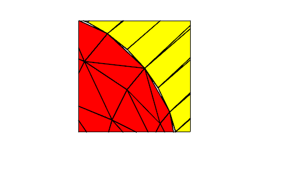

| |
Facet Mesh Generation |
| <<< Display Tolerances | Chapters | Faceting Output Via GO >>> |
This chapter describes how the fields of the PK_TOPOL_facet_mesh_o_t and PK_TOPOL_facet_mesh_2_o_t options structures control the generation of the facet mesh.
|
Note: Because these two options structures have many options in common, you should assume that the options described in this chapter are available in both options structures, unless noted otherwise. |
|
Note: The functionality described here offers partial support for topology that has facet geometry (meshes and plines). See the
PK Interface Programming Reference Manual for more information. |
The default values in PK_TOPOL_facet_mesh_o_t and PK_TOPOL_facet_mesh_2_o_t demonstrate how to return basic topological data for a facet representation, together with associated geometric data, to your application.
Depending on whether you are calling PK_TOPOL_render_facet or PK_TOPOL_facet_2, you should initialise these options structures using either PK_TOPOL_render_facet_o_m or PK_TOPOL_facet_2_o_m.
|
Warning: Do not initialise these options structures using either PK_TOPOL_facet_mesh_o_m or PK_TOPOL_facet_mesh_2_o_m |
See Section 110.2.2, “Choosing which tables to return”, for more information.
Some of the facet mesh options require a viewing matrix to be specified. Parasolid has a number of requirements on such matrices, as explained in Section 108.2.3, “Increasing facet density for given view directions” and Section 108.2.4, “Culling backward facing facets”.
View matrices are explained in Chapter 111, “Parasolid View Matrices”.
A number of the facet mesh options can take a tolerance value. It is assumed that if no explicit tolerance value is provided, Parasolid is free to calculate its own internal tolerance values. These are generally case-specific, rather than using specific fixed values.
The following sections describe the fields in the PK_TOPOL_facet_mesh_o_t and PK_TOPOL_facet_mesh_2_o_t options structures.
The
shape
field constrains what shape of facets are allowed in the facet mesh. The options are:
|
PK_facet_shape_convex_c (default) |
facets are generated so that all interior angles are convex and none of the facets contain interior holes |
|
the application permits concave interior facet angles, and none of the facets contain interior holes |
|
|
the application permits concave interior facet angles, and the application permits facets to contain interior holes |
The convexity test is made by projecting the facet fins onto the mid-plane of the facet and testing its interior angles. The “mid-plane” is defined in Section 108.2.10, “Facet planarity tolerance”.
The PK_facet_shape_cut_c and PK_facet_shape_any_c settings are only relevant where facets can contain more than three sides, as described in Section 108.2.6, “Maximum number of sides on facets”.
If PK_TOPOL_facet_2 is being used to return tabular facet data with the
shape
field set to PK_facet_shape_any_c, any facets containing holes are defined in the
facet_fin
table using the
null_index
marker to separate the exterior fin boundary from the interior fin boundaries. This format is described in the Section 110.4, “Topological information”.
When solid or sheet parts are faceted, the
match
option allows faces to be faceted independently or faceted together as a complete mesh. The options are:
Note: When your application inputs a list of faces, Parasolid recognises faces that belong to the same body and have identical transform entities. The requested matching will be applied to the edges between these faces unless
ignore_scope
is PK_facet_ignore_scope_local_c. For more information on
ignore_scope
, see Section 108.2.12, “Ignoring small features” |
The geometry matching option (PK_facet_match_geom_c) can be used when generating faceted output for a simple rendering application.
Figure 108-1 Geometry matching
The boundaries of neighbouring facet meshes will meet exactly (except in the special circumstances described below) but are topologically disjoint. If PK_TOPOL_facet_2 is being used to return tabular facet data, the
fin_fin
table only matches fins which belong to the same face (the co-fin values of fins on the face mesh boundary are set to a null index value).
Facet meshes may not match if faces are faceted using a coarse chordal tolerance. Parasolid checks whether the face contains any inner loops that lie very close to the outer face boundary. If it does, Parasolid reduces its chordal tolerance locally so that the boundary chords do not intersect any inner loops. If geometry matching is switched on, the refined mesh boundary no longer exactly matches the relatively coarse boundary of the adjacent face (small triangular gaps occur between chords on the refined boundary and those on the coarse boundary). You can use topology matching to prevent such gaps occurring.
The topology matching option facets all of the faces of a solid or sheet part as a single mesh.
Figure 108-2 Topology matching
If PK_TOPOL_facet_2 is being used to return tabular facet data, the
fin_fin
table describes matching between fins which belong to the same face and between boundary fins which belong to the neighbouring faces.
The topology matching option checks that the boundary vertices on a facet mesh always match with vertices on the boundaries of neighboring meshes (possibly splitting facets in the neighboring facet mesh in order to meet this condition).
The topology matching option corrects the problem of slight gaps described in “Geometry matching”.
The trimmed facets option clips facet boundaries to model edge curves.
It gives no matching between facets on the two faces of an edge, but ensures that the gaps or overlaps between such facets are no bigger than the supplied tolerances. Figure 108-3 shows the gaps occurring along a model edge.
The
density
option lets you increase the local facet density in either or both of the following cases:
The option lets you generate view-specific facet meshes that contain enhanced detail where the facet surfaces form silhouettes against, or are nearly parallel to, the specified views. The effect of each value is shown in Figure 108-4.
Figure 108-4 Increasing facet density for given view directions
It takes the following values:
|
PK_facet_density_no_view_c (default) |
|
|
Increase facet density at silhouettes for any specified views. |
|
|
Increase facet density in areas where the facet normals are nearly parallel to the given view directions. |
|
|
Increase facet density at both view silhouettes and in areas where the facet normals are nearly parallel to the view directions. The same view directions are used to compute the silhouette and parallel areas in which the facet density is increased. |
Each non-default value requires that view directions and local tolerance values are specified.
If
density
is set to a non-default value, view directions for increasing facet density are specified using the
view_directions
option. This takes an array of unit vectors, each unit vector defining a different view direction. A corresponding
n_view_directions
option contains the number of view directions, and should correspond with the size of the
view_directions
array.
When using PK_TOPOL_render_facet, you can also specify a single view direction using the
view_transf
argument in the function call. If both
view_directions
and
view_transf
are supplied,
view_transf
is ignored.
See Section 108.2.4, “Culling backward facing facets”, for information about how view directions are used when culling back facing facets.
For more information on view matrices, see Chapter 111, “Parasolid View Matrices”.
Local density tolerance values are required when
density
is set to a non-default value. These are specified using the options described below. In each of the following options, you use the boolean
is_...
option to switch on use of the tolerance, and its companion to specify a tolerance value. If an
is...
option is PK_LOGICAL_true, then its companion must be a positive, non-zero value.
When
density
is a non-default value,
local_density_tol
must be supplied. Supplying
local_density_ang
is optional.
The
cull
field lets you reduce the total size of the facet mesh by removing any backward facing facets that are hidden when viewed from a given view direction.It takes the following values:
|
PK_facet_cull_none_c (default) |
|
|
Cull back facing facets. This value requires that a view is specified. |
Because perspective information may be required in any view directions used by the culling process, the way that you specify view directions depends on which function you are using:
view_transf
argument.
cull_transfs
option.
The
cull_transfs
is an array of PK_TRANSF_t objects, each object defining a different view direction. A corresponding
n_cull_transfs
option contains the number of view directions, and should correspond with the size of the
cull_transfs
array.
Note: The
cull_transf
array can currently only contain a single view direction. |
In any view direction used for culling, the rotation component of the underlying matrix must not contain reflections, scales, or shears, and it must define a set of orthogonal axes
|
Note: Topology matching (the default type of matching) must be switched off when culling backward facing facets. See Section 108.2.2, “Match” for more details. |
For more information on view matrices, see Chapter 111, “Parasolid View Matrices”.
The
n_loops
and
loops
options allow specific PK_LOOP_t entities to be ignored when a sheet body or a face of a sheet body is faceted. This has the effect that specified holes can be capped when sheet entities are faceted.
Each entity is a loop which is owned by one of the sheet bodies (or faces of a sheet body) which are being faceted.
The default setting is not to ignore any loops.
The
max_facet_sides
field constrains the maximum number of sides on facets. The default value is 3.
Figure 108-5 Maximum number of sides on facets
You can apply faceting tolerances both globally (using the fields in the option structure described in this section) and locally (described in Section 108.2.7.4, “Local tolerances”).This allows a global tolerance to be applied to all topologies which do not have a specified local tolerance. This enables different tolerances to be applied to specific bodies or areas of a body where you want to capture additional detail. This section describes the various tolerance options that are available.
The
is_min_facet_width
and
is_max_facet_width
options control the minimum and maximum width of any side of a facet.
The value of
min_facet_width
overrides other input tolerance values. When
is_min_facet_width
is set to PK_LOGICAL_true, facets will be repeatedly refined until the width of each facet is less than
min_facet_width
. Once this happens, Parasolid will not further refine the facet to satisfy the supplied curve, surface or planarity tolerances, which typically results in facet dimensions that are smaller than
min_facet_width
.
When
is_max_facet_width
is set to PK_LOGICAL_true, the value of
max_facet_width
determines the maximum facet width.
Figure 108-6 shows a body where the maximum height of the sides of its facets has been set to 0.4 model units.
Note: If both facet widths options are supplied,
min_facet_width
must be less than
max_facet_width
. |
Figure 108-6 Maximum width of any side of a facet
Note: The
min_facet_width
option is ignored on topologies with facet geometry. |
The following sets of fields control how closely the fins on the boundaries of a face mesh match the originating edge geometry.
The default setting of each of
is_curve_chord_tol
,
is_curve_chord_max
and
is_curve_chord_ang
is PK_LOGICAL_false. This implies that no explicit curve tolerance values are supplied (Parasolid calculates appropriate tolerance values internally).
One or more of these fields can be set to the value PK_LOGICAL_true with one or more of the corresponding fields -
curve_chord_tol
,
curve_chord_max
,
curve_chord_ang
- set to a non zero, positive value.
The following sets of fields control how closely each face mesh matches the surface geometry of the originating face.
The default setting of
is_surface_plane_tol
and
is_surface_plane_ang
is PK_LOGICAL_false. These imply that no explicit surface tolerance values are supplied. (Parasolid calculates appropriate tolerance values internally).
One or more of these fields can be set to the value PK_LOGICAL_true with one or both of the corresponding fields,
surface_plane_tol
or
surface_plane_ang
set to a non zero, positive value.
Figure 108-7 Examples of different surface tolerance settings
As well as specifying global facet tolerances, you can attach local facet tolerance to individual or groups of topological entities (either faces or bodies) which then override the faceting tolerances already defined for the face or body using any of the tolerance options available to PK_TOPOL_facet_2.
Local tolerances are specified using the following options:
local_tols |
A set of tolerances to be attached to entities. This is an array of PK_facet_local_tolerances_t. Default: 0 (empty). For more information on the local facet tolerances see the following sections: |
topols_with_local_tols |
An array of unique topological entities (faces or bodies) to which you want to attach local tolerances. |
local_tols_for_topols |
A list of indexes into the |
|
Note: This option is only available in PK_TOPOL_facet_mesh_o_t. |
There are a number of ways that you can manage facet output at degenerate vertices. Parasolid lets you control:
You use the
degen
(PK_facet_degen_t) option to specify which one you want to use. The values it can take are as follows:
|
Each facet adjacent to a degeneracy has a unique vertex at the degeneracy. The value for the degenerate parameter at each vertex is the value of the degenerate parameter found for the previous vertex in the facet. Normals and derivatives for each facet are calculated using the appropriate parameter, and so are guaranteed to be accurate for each facet. However, the topology of the original part is not preserved. This is the default setting. |
|
|
Parasolid creates a single vertex which is used by all the facets adjacent to the vertex. The value for the degenerate parameter at this vertex is taken from the lowest value at the other end of one of the facets. This preserves the topology of the original, but the parameters, normals and derivatives of all other facets are incorrect. This option only has an effect if using tabular faceting via PK_TOPOL_facet_2. See Chapter 110, “Tabular Output Of Faceting” for more information. |
|
|
Like the default method, each facet adjacent to a degeneracy has a unique vertex at the degeneracy, with a unique parameter. The normals and derivatives are therefore correct for each facet adjacent to the degeneracy, but topology is not preserved. Unlike the default setting, the value for the degenerate parameter at each vertex is taken from the average value of the degenerate parameters found for the vertices on either side. |
The differences between these three options are illustrated in Figure 108-8.
Figure 108-8 Creating facet vertices at degeneracies
This is managed first by the initial division of a face into a small number of facets. Each facet is then tested to see if it meets the tolerance criteria, i.e. surface tolerance, maximum size, etc. If the facet does not meet the criteria it is then split into two and each resulting facet is again tested as before. This process continues until the criteria are satisfied. However, if the process comes to a point where a facet has been produced which is smaller than the minimum width, then the recursion stops, regardless of the other criteria.
The following sets of fields control how closely the coordinates of a facet are matched to a common mid-plane. This is defined as the plane passing through the center of gravity of the facet vertices whose normal is the normalized sum of the cross products of all ordered pairs of adjacent vertices in the facet. For more details see the documentation for PK_TOPOL_facet_mesh_2_o_t.
The facet planarity tolerance values are only relevant where facets can contain more than three sides.
Figure 108-9 Examples of different planarity tolerance settings
You can control how facets are created for faces that contain wire edges using the
wire_edges
option. This takes the following values:
|
PK_facet_wire_edges_no_c (default) |
Faceting ignores wire edges in faces, and they are faceted over |
|
Faceting takes wire edges in faces into account and facets the face in such a way that no facet is intersected by a wire edge. |
The behaviour of this option is illustrated in Figure 108-10.
Figure 108-10 faceting faces that contain wire edges
Small features in a body or model may be ignored during faceting operations. A small feature is a set of connected faces whose box size is smaller than a user-specified value. Doing this can speed up faceting, and reduce the number of facets created. It is useful if you are generating a “draft view” of a model, in order to get a rough idea of what it looks like.
|
Warning: This option is intended only to improve the performance of faceting. In particular, you should not use it to implement any type of feature suppression functionality in your application. |
You use the
ignore
,
ignore_value
, and
ignore_scope
options in PK_TOPOL_facet_mesh_2_o_t or PK_TOPOL_facet_mesh_o_t to control whether, and how, small features are ignored.
Not all small features are ignored. This is determined by the position of the boundary between the small feature and the rest of the model, only if this boundary lies completely within a face of the model is the small feature ignored as illustrated in Figure 108-11.
Figure 108-11 Ignoring small features
ignore |
Control whether to ignore small features. This can take the following values:
For a description of the difference between these last two values, see Section 108.2.12.1, “Defining small features using a ratio value”. |
ignore_value |
Define which features are classed as small. This option takes either:
The default is 0.0. See Section 108.2.12.1, “Defining small features using a ratio value” for more information. |
ignore_scope |
This option lets you specify the scope within which loops in a face may be ignored. It only applies when faceting a list of faces. The option can take two values:
The value of |
Note: If the
loops
option is used, faceting ignores the specified loops regardless of the value of
ignore
. See Section 108.2.5, “Loops”, for information. |
The PK_facet_ignore_ratio_c and PK_facet_ignore_body_ratio_c values for
ignore
let you define the size of a small feature in terms of a ratio, rather than an absolute value. This is useful, because you can ignore small features without having to know anything about the overall size of the model. For example, specifying an
ignore_value
of 0.01 when using one of the ratio values means that any feature whose box size is less than 1% of the size of the entire model or owning body is ignored, regardless of its absolute size.
Two ratio values are available so that you can choose whether to define small features in terms of either the owning body or the entire assembly.
If faceting bodies, the overall box is the union of all the
topols
boxes (with
topol_transfs
applied) in the call to PK_TOPOL_facet_2 or PK_TOPOL_render_facet.
If faceting a list of faces, the overall box depends on the value of
local_scope
:
|
The union of all the |
|
|
The union of all the |
If you are using geometry or topology matching, Parasolid provides support for incremental faceting. When incremental faceting is used, only those faces in a body that have not already been faceted, have been modified, or that need to be refaceted due to refinement of their boundaries are faceted. This can lead to a large performance improvement, for example, in applications that display a shaded image of a model after each feature operation. Incremental faceting is supported by the functions PK_TOPOL_facet_2 and PK_TOPOL_render_facet.
|
Note: Changes to other facet controls may not be honoured while incremental faceting is switched on. |
For an example of this functionality, see the code example in the
C++\Code Examples\Application
Support\facetting
folder, located in
example_applications
in your Parasolid installation folder.
Note: Incremental faceting only supports topology matching if the following are set:
|
Incremental faceting is controlled by the following options in PK_TOPOL_facet_mesh_o_t and PK_TOPOL_facet_mesh_2_o_t:
incremental_facetting |
Whether or not to use incremental faceting. The following settings can be used:
incremental_facetting
must be set to PK_facet_incr_no_c. See Section 104.4, “Controlling exclusivity of rendering and faceting functions”, for more information. |
incremental_method |
Which method to use for
Note: When using topology matching, this option must be set to PK_facet_incr_method_auto_c. |
incremental_transformation |
Whether faces that have only been transformed since the last incremental faceting call but have no other modifications are treated as changed by the incremental faceting call.The following settings can be used:
Note: If
incremental_method
is set to PK_facet_incr_method_attrib_c, this option is ignored. |
incremental_refinement |
Note: If
incremental_method
is set to PK_facet_incr_method_auto_c, this option is ignored and any faces adjacent to an edge that has been refined will be automatically refaceted.Under certain circumstances, the current tessellation of facets does not satisfy the required faceting controls, and Parasolid needs to refine the facet mesh in order to produce an accurate facet representation. The usual consequence of this is that additional facet vertices are added to model edges. This option controls whether or not such refinement is allowed. The following settings can be used:
Note: Depending on the setting for |
incremental_report |
Note: If
incremental_method
is set to PK_facet_incr_method_auto_c, this option is ignored.Controls how much additional information is reported when faceting fails. The following settings can be used:
The |
Note: If PK_TOPOL_facet_2 or PK_TOPOL_render_facet is running concurrently in a thread without locked partitions,
incremental_facetting
must be set to PK_facet_incr_no_c. See Chapter 114, “Calling Parasolid From Multiple Threads”, for more information on locked partitions. |
Parasolid provides two methods for incremental faceting via the
incremental_method
option. If set to PK_facet_incr_method_auto_c Parasolid automatically refacets any faces on a body that need to be faceted for example, due to changes in the body. In addition, any faces that need new facets in order to honour requested matching are also refaceted.
Note: If you are using rollback, we recommend that you set
incremental_method
to PK_face_incr_method_auto_c to ensure facet information survives all rollback operations. |
Note: If
incremental_method
is set to PK_facet_incr_method_auto_c, the
incremental_report
and
incremental_refinement
options are ignored. |
If
incremental_method
is set to PK_facet_incr_method_attrib_c, Parasolid will only refacet faces that do not have one of the following system attributes attached:
Only faces without an attribute of type SDL/TYSA_INCREMENTAL_FACETTING are faceted. Attributes of type SDL/TYSA_FACET_VERTEX_DATA on a face’s edges and fins are used to regenerate the positions of facet vertices.
|
Note: If attributes are attached to both an edge and its fins, then the fin data must match the edge data, or an error is raised. |
Figure 108-12 provides a simple demonstration of how incremental faceting works with both methods:
Figure 108-12 A simple example of incremental faceting in use
For more details about the specification of the system attributes used for incremental faceting, see Section A.4, “System attribute definitions whose presence alone defines a property”.
|
Note: As a side effect, you can use Parasolid’s support for incremental faceting to force the tessellation of faces in a body. You can do this by explicitly adding attributes to the faces and edges in the body yourself. See Chapter 96, “Attributes”, for information on adding attributes to entities. If you use this method, then you need to specify chordal tolerance information if you want to allow incremental refinement to take place. |
Sometimes, around points of inflection, it is possible that a single facet is generated which is large, relative to the surrounding facets. Despite the change in curvature around the point of inflection, this facet can still satisfy the specified
surface_plane_tol
and the
surface_plane_ang
. This means that, by default, the facet spanning the point of inflection is not split, and this can result in a shaded image that looks “flat” around the inflection, particularly if the graphics library used by your application uses the normals at the facet vertices.
One way of improving the appearance of a faceted image that has points of inflection is simply to generate more facets for the whole image, by specifying a smaller max_facet_width. However, this can have a large performance cost and result in a large number of facets even for those parts of the image that do not require it.
A better method is to use the inflect option to increase the number of facets around points of inflection, while leaving the facet density in other areas the same. This option can take the following values:
|
Do not increase the number of facets around points of inflection. This is the default. |
|
|
Split facets around the point of inflection so as to increase the number of facets. |
Figure 108-13 shows the superior effects that can be achieved when splitting facets around the point of inflection.
Figure 108-13 Increasing the number of facets around points of inflection
You can improve the general quality of the facets that are created using the
quality
option. This option controls whether extra checks are performed during the faceting operation: running additional checks results in better quality facets. Facet quality is improved at the expense of performance, and so you should expect the faceting algorithm to be slower if you use a non-default
quality
value. In particular, you should only consider using this option if you are using facets for purposes other than visualisation.
The
quality
option takes the following values:
|
No additional checks are performed to improve facet quality. This is the default. |
|
|
Extra checks are performed in order to improve the quality of the facets. |
If a body contains a tolerant edge, switching on the
vertices_on_planar
option lets you control which of the tolerant edge’s SP-curves the resulting facet vertices lie on. If a tolerant edge has an adjacent face with a planar surface attached, using
vertices_on_planar
ensures that the facet vertices along the tolerant edge lie in the plane of the planar face. If
vertices_on_planar
is not used, the facet vertices may lie on either side of the edge.
Figure 108-14 demonstrates the effect of this option. In the example, a face attached to a spherical (i.e. non-planar) surface and a face attached to a planar surface share a tolerant edge. After faceting, the facet vertices lie either on the SP-curve attached to the non-planar face (the default result), or on the SP-curve attached to the planar face (using
vertices_on_planar
), leading to a visible difference in the resulting facet mesh.
Figure 108-14 Forcing facet vertices on tolerant edges to lie on planar faces
Note: If both faces adjacent to a tolerant edge are planar, Parasolid cannot force the facet vertices to be on a particular face using
vertices_on_planar
. |
You can control the topology of the facets created for any singularities in a body using the
sing_topol
option, which takes the following values:
The effect of this option on a cone is illustrated in Figure 108-15.
Figure 108-15 Controlling the topology of a faceted cone at the singularity
Note: One advantage of setting
facet_sing
to PK_facet_sing_topol_degen_c is that it enables the facets created around a singularity to be output as a single facet strip, if you wish. This is not possible by default. |
You can control faceting on faces that are offsets of one another using the
respect_offset
option in PK_TOPOL_facet_mesh_2_o_t or PK_TOPOL_facet_mesh_o_t. It takes the following values:
|
Take faces that are offsets of one another into account when creating facets. |
|
|
Do not take faces that are offsets of one another into account when creating facets. This is the default. |
|
Note: If set to PK_facet_respect_yes_c, faceting will attempt to reduce the likelihood that facets on these faces clash. This may result in the creation of more facets. |
The following conditions apply when
respect_offset
is PK_facet_respect_yes_c:
density |
||
You can enlarge facets generated from bodies created at different scales using the
bodies_with_scales
and
scale_factors
options. An array of bodies whose facets you want to enlarge are supplied via
bodies_with_scales
. The scale to which the supplied facets are to be enlarged is supplied via
scale_factors
option.
Note: If
topols_transfs
are supplied any translation component of the transform will be applied to the facets after they have been scaled. |
You can also choose to specify a scale to be used on the resultant facets using the
output_scale_factor
option. No scaling is applied when this option is set to PK_scale_factor_1x_c.
|
Note: The use of this output scale factor is optional. Only one output scale factor can be supplied and this will apply to the scale of the resultant facets. |
For more information on scaling factors and modelling with parts created at different scales, see Chapter 23, “Distant and Multi-scale Modelling”.
The
n_viewports
and
viewports
options allow you to return only those facets that lie on faces which overlap with at least one supplied viewport.
If
n_viewports
is set to 0, all facets will be returned.
Note: If
incremental_facetting
is set to anything other than PK_facet_incr_no_c,
n_viewports
must be set to 0. |
| <<< Display Tolerances | Chapters | Faceting Output Via GO >>> |